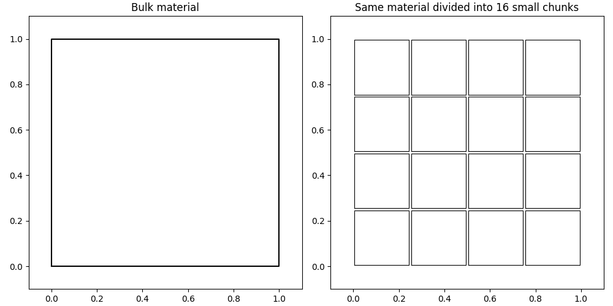
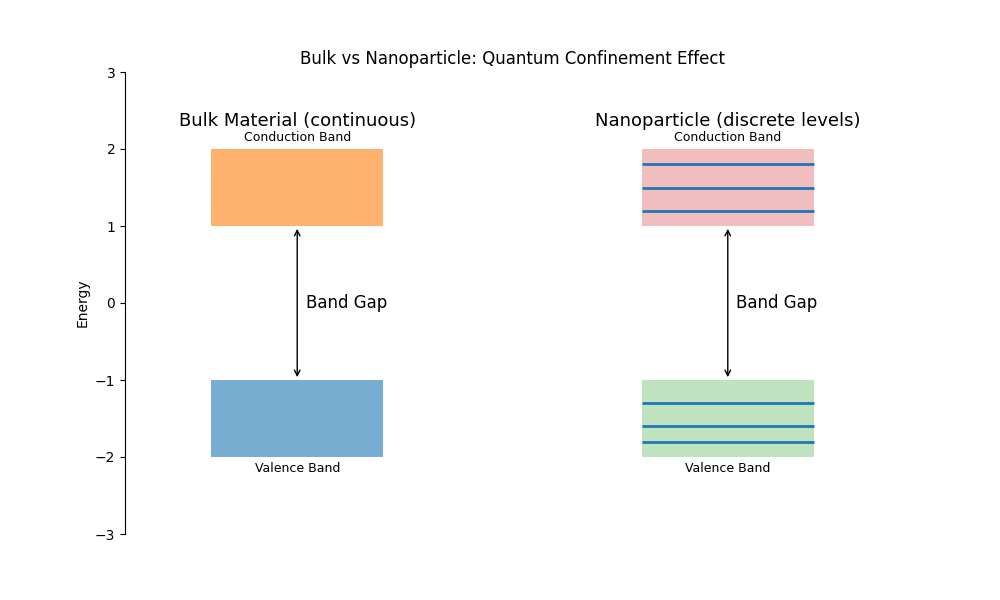

Introduction to Nanoparticles
What is a nanoparticle?
Imagine a \(1\,\text{cm}^3\) gold cube exposed to air. Only its outer surface atoms interact with the environment. Now consider the same volume divided into smaller pieces. The total surface area increases significantly, even though the volume remains unchanged.

Nanoparticles are materials whose characteristic size typically lies in the range of 1–100 nm. They occupy the transition regime between isolated atoms and bulk matter.
At this scale, a large fraction of atoms reside on the surface rather than in the interior, leading to fundamentally different physical and chemical behavior.
As particle size decreases, the surface-to-volume ratio increases sharply. For a spherical particle:
\[ \frac{S}{V} \propto \frac{1}{r} \]where \(S\) is surface area, \(V\) is volume, and \(r\) is the particle radius. Smaller \(r\) implies stronger surface dominance.
Because of this, nanoparticles often show enhanced chemical reactivity and higher surface energy compared to bulk materials.
In simple terms, a nanoparticle is a material where surface effects dominate over bulk properties due to extremely small size.
Thermodynamic consequences
Surface atoms have unsatisfied bonds (dangling bonds), making them energetically less stable than interior atoms.
As particle size decreases, surface energy becomes increasingly significant, leading to size-dependent properties such as melting point reduction.
According to the Gibbs–Thomson relation:
\[ T_m(r) = T_m(\infty)\left(1 - \frac{2\gamma}{\rho L r}\right) \]where \(T_m(r)\) is the melting temperature of a nanoparticle and \(T_m(\infty)\) is the bulk melting temperature.
Here, \(\gamma\) is surface energy, \(\rho\) is density, \(L\) is latent heat of fusion, and \(r\) is particle radius.
This shows that smaller particles are thermodynamically less stable and tend to melt at lower temperatures.
Quantum consequences
In bulk materials, electrons occupy nearly continuous energy bands. However, when dimensions approach the electron wavelength, spatial confinement occurs.
This phenomenon is known as quantum confinement, where continuous bands split into discrete energy levels.
\[ E_n = \frac{n^2 h^2}{8mL^2} \]where \(n\) is the quantum number, \(h\) is Planck’s constant, \(m\) is electron mass, and \(L\) is the confinement length.
As particle size decreases, energy level spacing increases, strongly affecting optical and electronic properties.

This is the basis of quantum dots, where emission color depends on particle size due to quantized energy levels.